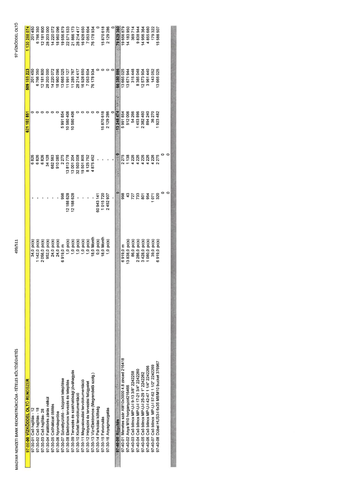

| Tétel | Menny. | Egys. | Anyag e.ár (net HUF) | Díj e.ár (net HUF) | Anyag összesen (net HUF) | Díj összesen (net HUF) | Anyag+Díj összesen (net HUF) |
|---|---|---|---|---|---|---|---|
| 97-00-00 VÍZKÖDDEL OLTÓ RENDSZER | NaN | NaN | 0 | 0 | 621 102 851 | 509 185 223 | 1 130 288 074 |
| 97-30-01 Cső hajlítás - 12 | 34,0 | pc(s) | 0 | 6 826 | 0 | 201 450 | 201 450 |
| 97-30-02 Cső hajlítás - 18 | 1 142,0 | pc(s) | 0 | 6 826 | 0 | 6 766 350 | 6 766 350 |
| 97-30-03 Cső hajlítás - 28 | 2 056,0 | pc(s) | 0 | 6 826 | 0 | 12 181 800 | 12 181 800 |
| 97-30-04 Faláttörés zárás nélkül | 952,0 | pc(s) | 0 | 34 128 | 0 | 28 203 000 | 28 203 000 |
| 97-30-05 Csőhálózat öblítés | 24,0 | pc(s) | 0 | 682 563 | 0 | 14 220 072 | 14 220 072 |
| 97-30-06 Nyomáspróba | 24,0 | pc(s) | 0 | 910 085 | 0 | 18 960 096 | 18 960 096 |
| 97-30-07 Szivattyú/oltó - központ telepítése | 6 919,0 | m | 998 | 2 275 | 5 991 854 | 13 665 025 | 19 656 879 |
| 97-30-08 Elektromos tervezés és telepítés | 1,0 | pc(s) | 12 188 628 | 13 813 778 | 10 580 406 | 11 991 127 | 22 571 533 |
| 97-30-09 Tervezés és szakhatósági jóváhagyás | 1,0 | pc(s) | 12 188 628 | 13 001 204 | 10 580 406 | 11 285 767 | 21 866 173 |
| 97-30-10 Kiviteli tervdokumentáció | 1,0 | pc(s) | 0 | 32 503 008 | 0 | 28 214 417 | 28 214 417 |
| 97-30-11 Megvalósulási tervdokumentáció | 1,0 | pc(s) | 0 | 19 501 805 | 0 | 16 928 650 | 16 928 650 |
| 97-30-12 Helyszíni és tervezési felügyelet | 1,0 | pc(s) | 0 | 8 125 752 | 0 | 7 053 604 | 7 053 604 |
| 97-30-13 Víz+Elektromos (Megrendelői szolg.) | 18,0 | Month | 0 | 4 875 452 | 0 | 76 178 934 | 76 178 934 |
| 97-30-14 Parkolási költség | 0,0 | pc(s) | 60 943 141 | 0 | 0 | 0 | 0 |
| 97-30-15 Felvonulás | 18,0 | Month | 1 015 720 | 0 | 15 870 618 | 0 | 15 870 618 |
| 97-30-16 Anyagmozgatás | 1,0 | pc(s) | 2 452 937 | 0 | 2 129 286 | 0 | 2 129 286 |
| 97-40-00 Rögzítés | NaN | NaN | 0 | 0 | 13 248 474 | 66 380 886 | 79 629 360 |
| 97-40-01 Menetes szár AM10x3000 4.8 zinced 216418 | 6 919,0 | m | 998 | 2 275 | 5 991 854 | 13 665 025 | 19 656 879 |
| 97-40-02 Anya M10 horganyzott 216466 | 13 838,0 | pc(s) | 43 | 1 138 | 512 006 | 13 671 944 | 14 183 950 |
| 97-40-03 Cső bilincs MP-U-I 19-13 3/8" 2242258 | 86,0 | pc(s) | 727 | 4 226 | 54 266 | 315 448 | 369 714 |
| 97-40-04 Cső bilincs MP-U-I 17-21 3/4" 2242260 | 2 286,0 | pc(s) | 733 | 4 226 | 1 453 896 | 8 385 048 | 9 838 944 |
| 97-40-05 Cső bilincs MP-U-I 25-29 1" 2242262 | 3 428,0 | pc(s) | 801 | 4 226 | 2 382 460 | 12 573 904 | 14 956 364 |
| 97-40-06 Cső bilincs MP-U-I 42-47 1 1/4" 2242266 | 1 080,0 | pc(s) | 954 | 4 226 | 894 240 | 3 961 440 | 4 855 680 |
| 97-40-07 Cső bilincs MP-U-I 57-62 1 1/2" 2242269 | 39,0 | pc(s) | 1 071 | 4 226 | 36 270 | 143 052 | 179 322 |
| 97-40-08 Dübel HUS3-I 6x35 M8/M10 bucket 376967 | 6 919,0 | pc(s) | 320 | 2 275 | 1 923 482 | 13 665 025 | 15 588 507 |
